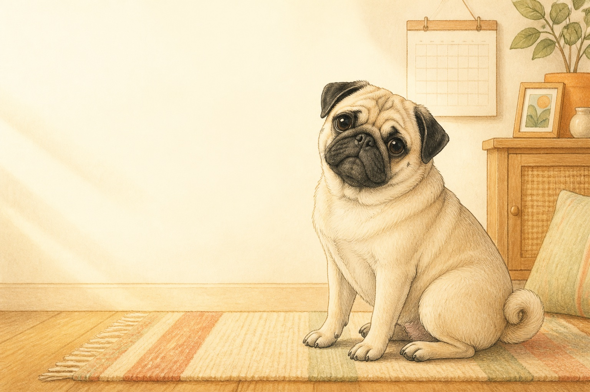

犬 BREED GUIDE
パグを飼う前に
パグを家族に迎える前に、毎日の暮らしと準備を具体的に考えるためのガイドです。犬種による傾向は目安として、実際の性格・健康状態・年齢は一頭ずつ異なります。

犬 BREED GUIDE
パグを家族に迎える前に、毎日の暮らしと準備を具体的に考えるためのガイドです。犬種による傾向は目安として、実際の性格・健康状態・年齢は一頭ずつ異なります。
愛嬌があり、人と一緒に過ごすことを好む犬種です。
暑さ・呼吸・目や皮膚のケアに配慮し、肥満を防ぐ食事管理をします。
激しい運動や高温多湿を避け、体調の変化を早く相談できる準備をします。
ここで紹介するのは犬種・猫種の一般的な傾向です。性格や健康状態には個体差があるため、実際に迎える子の様子と飼育環境を確認してください。
小型犬に分類されることが多く、必要な運動量・食事量・用品の大きさは個体差があります。お迎え前に成長後の体格、日々の運動や遊び、鳴き声・抜け毛・お手入れの頻度を確認しましょう。
年齢に合うフード、食器、安心して休める場所、トイレ用品、移動用キャリー、脱走・誤食対策、かかりつけ動物病院を準備します。散歩用品と迷子対策も必要です。
購入・譲渡費用だけでなく、用品、食事、予防、医療、トリミングや散歩用品、老後の介護まで見積もります。急な治療費に備える方法も家族で決めておきましょう。
犬種・猫種の一般的な傾向だけで判断せず、迎え先から健康記録、ワクチン・駆虫歴、既往歴、食事、生活リズムを受け取ります。気になることは迎える前から動物病院に相談しましょう。